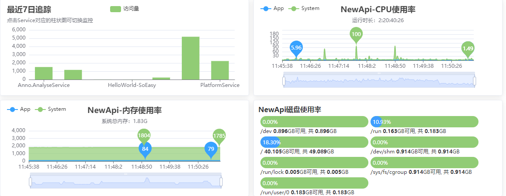

Anno
Anno 是一个可监控、可追踪、简单易用、高性能的微服务引擎框架

![[object Object]](/img/homebanner1.jpg)
简单、优雅、体验好
Viper 是Anno微服务框架的一个示例项目，也是一个Dashboard面板项目。Anno 简单易用、高性能、可监控、可追踪。 文档部分我们以Viper作为示例来学习Anno。简单的注册中心、优雅的容器服务、好用的客户端库。 自带服务发现、调用链追踪、Cron调度、限流、事件总线依赖少。类似MVC的开发体验及插件化开发。
![[object Object]](/img/homebanner3.jpg)
安全、稳定、高可用
Anno 底层通讯RPC库我们采用了有很多成功案例（HBase、Hive等等）并且是Apache顶级项目的Thrift，以及谷歌出品深受用户喜爱的Grpc并且有微软加持。两个通讯库我们可以任选其一，并且切换通讯库的时候业务代码可以实现零改动（通讯库和业务依赖库深度解耦）。
![[object Object]](/img/homebanner2.jpg)
全平台、可追踪、可监控
一个不可监控的微服务平台是可怕的，出了问题 难以快速、准确、定位问题的根源， 然而Anno则提供了完善的监控体系，包括链路追踪、服务占用的系统资源、系统自身 CPU、内存、硬盘使用率实时可监控等等。